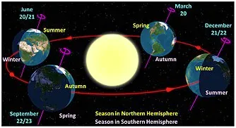
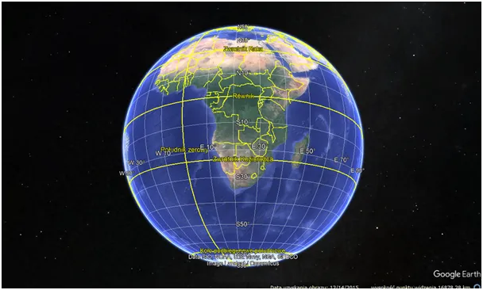
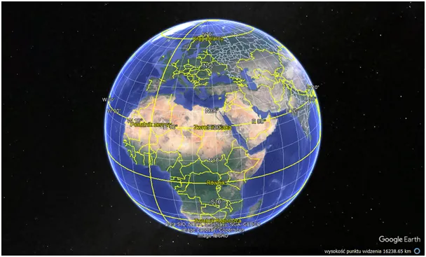
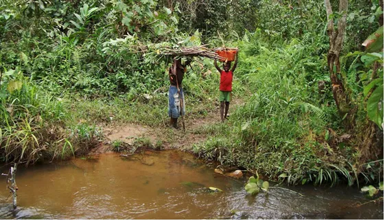

Kosmiczne bujanie globusem
W ciągu roku Ziemia przebywa drogę 939 887 974 km, co daje średnią prędkość Ziemi na orbicie równą 107 218 km/h (ok. 29,78 km/s). Tyle Wiki. Czytając ten wpis przenosicie się ok. 10 000 km w Kosmosie to tyle, co z Polski na samo południe Afryki.

Ruch obrotowy w skali roku daje efekt bujania się Ziemi. Gdy wysuniemy w dłoniach globus i na wysokości oczu ustawimy południowy zwrotnik np. niech to będzie Bostwana to Europa będzie ledwo widoczna, taka jest perspektywa Słońca w grudniu. W czerwcu Ziemia jest tak nachylona, że prostopadle świeci w południowym Egipcie, na Zwrotniku Raka. Nachylenie osi ziemskiej to 23,5 st., więc roczne bujanie Ziemi to razem 47 st., sporo. Gdy zimą widzimy Słońce około 14 stopni nad horyzontem i razi nas w oczy, to latem jest to blisko 62 st. i trzeba mocno unieść głowę, aby je zobaczyć .


Dziś w polskie południe Słonce świeci pionowo z nieba już a Angoli i opuszcza Zambię, jak widać tam też zbierają chrust.

Minusem życia blisko równinka są długie noce przez cały rok. Na samym równiku każda noc i każdy dzień są równe i trwają po 12 h, jeśli jesteśmy w górach i jest po deszczu nad ranem może być chłodno. Kto ma dziś słoneczny dzień poczuje już na twarzy ciepełko powstałe w reaktorze jądrowym odległym o 150 mln km. To światło potrzebowało aż 8 minut, aby dotrzeć ze Słońca.
Paweł Klimczewski